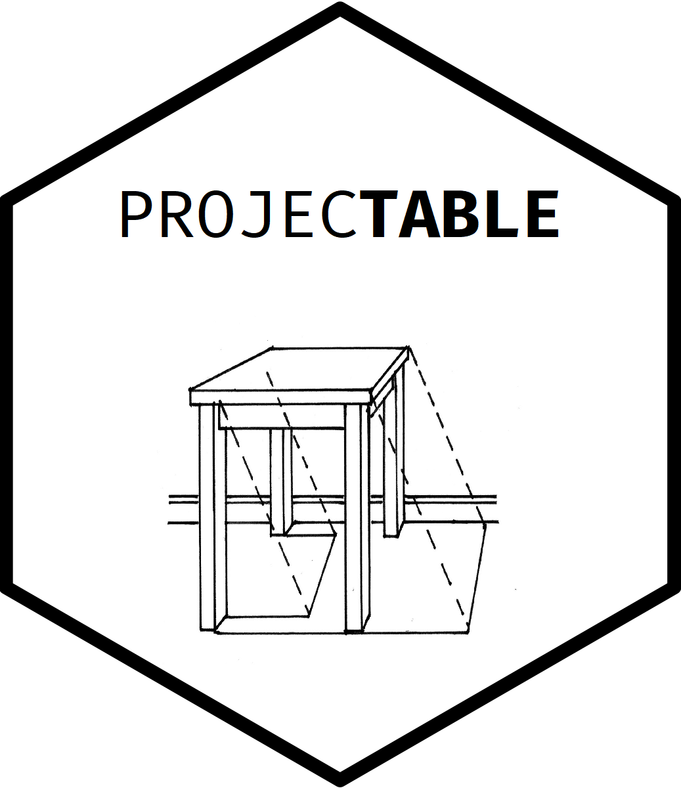
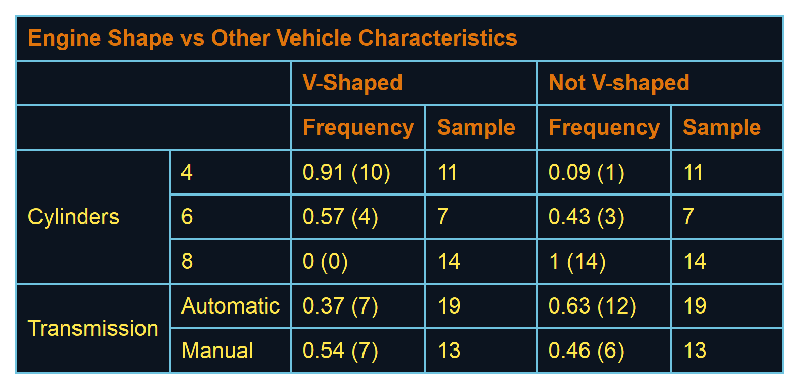

projectable 
Producing output tables is an exceedingly manual activity, particularly when tabling complex statistics with associated metadata. When preparing large numbers of tables for presentation or publication, providing different views of the same result set can require large amounts of re-processing and fiddly manual combination and reshaping of outputs.
Inspired by the gt R package (https://gt.rstudio.com/), projectable is designed to easily support flexible specification and table manipulation. The projectable approach treats a table as a collection of calculations with accompanying metadata rather than simple values. It aims to support easily moving from specification to data production to presentation of results by treating an output table as a “projection” of complex results.
Installation
You can install the unreleased version of projectable from GitHub with:
devtools::install_github("socialresearchcentre/projectable")Usage
The projectable package implements a set of interlocking functions which are designed to ingest a simple dataframe, perform calculations upon it to generate a metadata-rich table like object, and reshape that object back into a ‘flat’ dataframe to be formatted using gt or flextable.
library(projectable)
library(dplyr)
library(gt)
library(flextable)
my_tbl <- mtcars %>%
# Create metadata-rich summary table according to a column and row specification
prj_tbl_rows(
Cylinders = cyl,
Transmission = list(Automatic = am %in% 0, Manual = am %in% 1),
) %>%
prj_tbl_cols(
`V-Shaped` = col_freq(n = vs %in% 1, N = vs %in% 0:1),
`Not V-shaped` = col_freq(n = vs %in% 0, N = vs %in% 0:1)
) %>%
prj_tbl_summarise() %>%
# Tag columns to display
prj_shadow(everything(), .shadow = c(Frequency = "{signif(p, 2)} ({n})", Sample = "{N}"))
my_gt <- my_tbl %>%
# Pass through to `gt` for formatting
prj_gt() %>%
gt::tab_header(title = "Engine Shape vs Other Vehicle Characteristics") %>%
gt::tab_stubhead(label = "Vehicle Characteristics") %>%
gt::tab_options(
heading.background.color = "#080808",
row_group.background.color = "#f0f0f0"
)
my_flex <- my_tbl %>%
# Pass through to `flextable` for formatting
prj_flex() %>%
flextable::theme_tron_legacy() %>%
flextable::add_header_lines("Engine Shape vs Other Vehicle Characteristics")